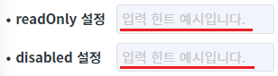
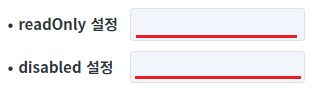
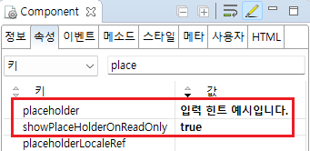

Input의 'showPlaceHolderOnReadOnly' 속성을 사용하여 Input이 읽기 전용 상태이거나 비활성화 상태일 때도 힌트 문자열(placeholder)이 표시되도록 설정한 예제입니다.
속성의 설정 값에 따른 동작은 다음과 같습니다.
true : 비활성화 상태나 읽기 전용 상태일 때도 'placeholder' 속성에 설정한 값이 입력 필드에 표시됩니다.
false : (기본 설정) 비활성화 상태 또는 읽기 전용 상태일 경우, 'placeholder' 속성에 설정한 값은 입력 필드에 표시되지 않습니다.
이 예제에서 Input의 읽기 전용 상태는 'readOnly' 속성을 'true'로 설정하여 적용하고, 비활성화 상태는 'disabled' 속성을 'true'로 설정하여 적용하였습니다.
showPlaceHolderOnReadOnly 속성을 true로 설정
showPlaceHolderOnReadOnly 속성을 false로 설정
예제 영역 'showPlaceHolderOnReadOnly: true'에서 테스트합니다.1
STEP 1: 초기 상태를 확인합니다.
두 개의 Input은 'placeholder' 속성의 설정 값이 '입력 힌트 예시입니다.'으로 설정되어 있고, 'showPlaceHolderOnReadOnly' 속성의 설정 값은 'true'로 설정된 상태입니다. 첫 번째 Input은 'readOnly' 속성이 'true'로 설정되었고, 두 번째 Input에는 'disabled' 속성이 'true'로 설정되었습니다.
2
STEP 2: 실행된 결과를 확인합니다.
두 개의 Input에 'placeholder' 속성에 설정한 값이 표시됩니다.
Image 1.브라우저(Chrome) 실행 예시

예제 영역 '(기본 설정) showPlaceHolderOnReadOnly: false'에서 테스트합니다.1
STEP 1: 초기 상태를 확인합니다.
두 개의 Input은 'placeholder' 속성의 설정 값이 '입력 힌트 예시입니다.'으로 설정되어 있고, 'showPlaceHolderOnReadOnly' 속성의 설정 값은 'false'로 설정된 상태입니다. 첫 번째 Input은 'readOnly' 속성이 'true'로 설정되었고, 두 번째 Input에는 'disabled' 속성이 'true'로 설정되었습니다.
2
STEP 2: 실행된 결과를 확인합니다.
두 개의 Input에 'placeholder' 속성에 설정한 값이 표시되지 않습니다.
Image 2.브라우저(Chrome) 실행 예시

1
Input의 속성을 정의합니다.
[필수] showPlaceHolderOnReadOnly="true"
읽기 전용 상태이거나 비활성화 상태일 때도 placeholder가 표시되도록 설정합니다.
(옵션 설명)
- false : [default] Input이 비활성화 상태 또는 읽기 전용 상태이면, 'placeholder' 속성에 설정한 값이 입력 필드에 표시되지 않습니다.
- true : Input이 비활성화 상태나 읽기 전용 상태일 때도 'placeholder' 속성에 설정한 값이 입력 필드에 표시됩니다.
[필수] placeholder="문자열"
값이 입력되지 않은 경우 입력 필드에 표시할 문자열을 설정합니다.
예시) placeholder="입력 힌트 예시입니다."
Image 3.웹스퀘어 스튜디오의 Component View - 속성 설정 예시

Example 1.Source
<!-- Input 의 소스 본문 예시 --> <xf:input showPlaceHolderOnReadOnly="true" placeholder="입력 힌트 예시입니다."> </xf:input>
placeholder
showPlaceHolderOnReadOnly